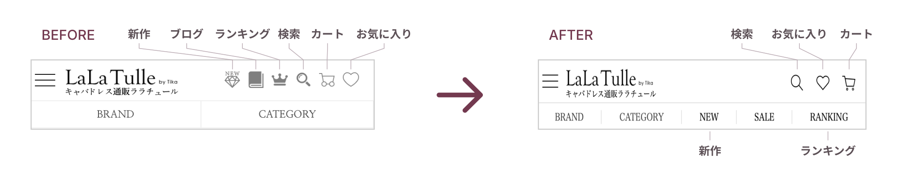
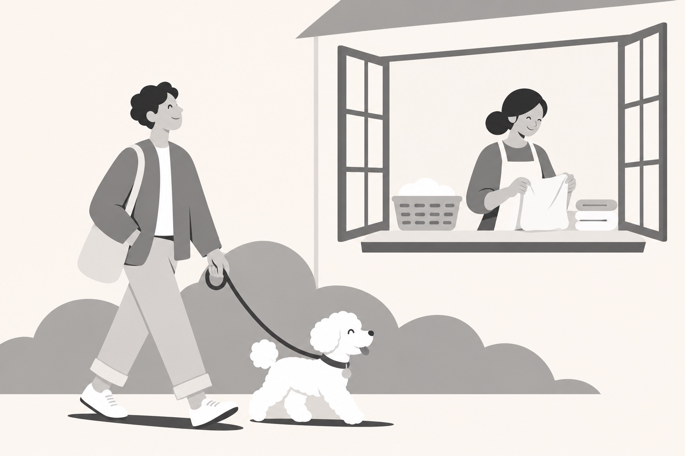
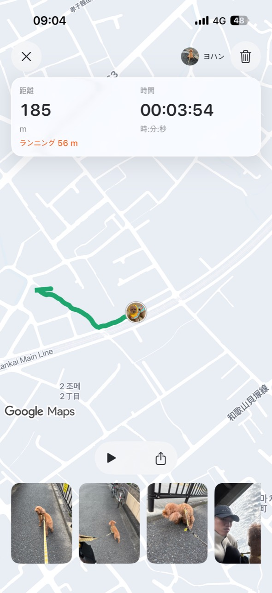
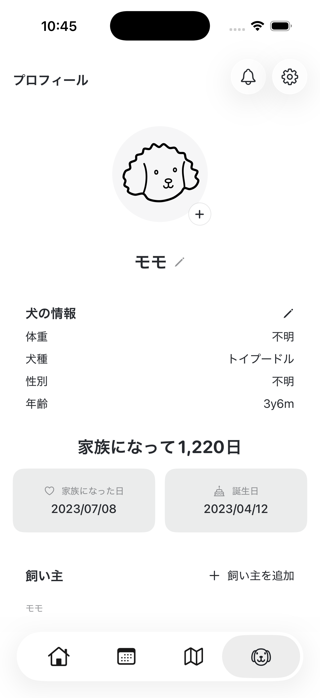
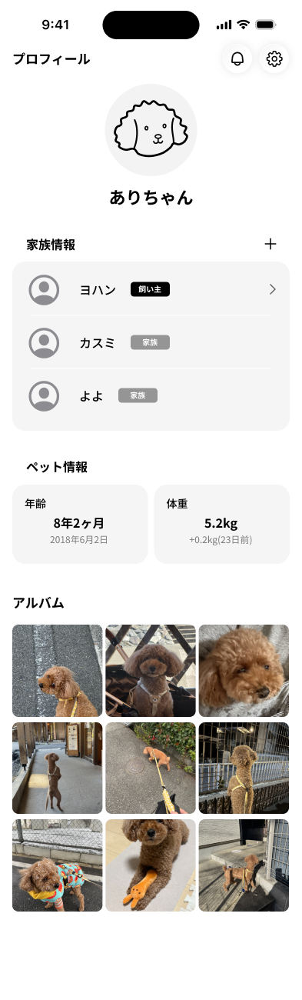
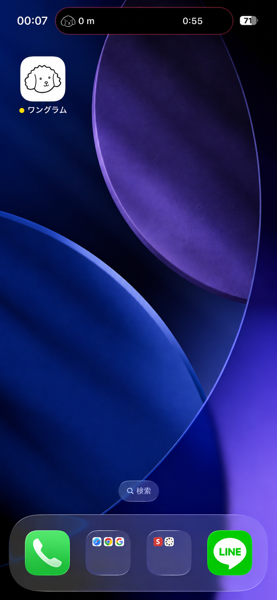
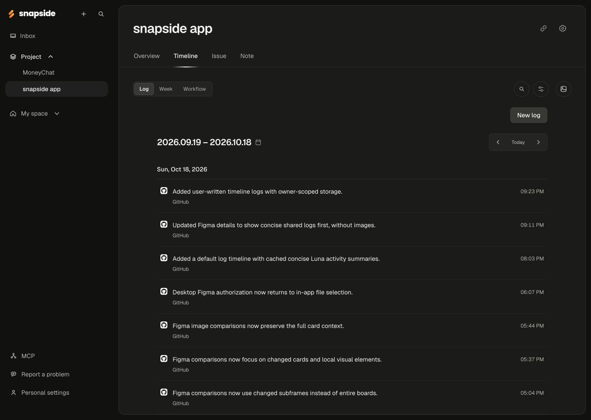

商品リスト閲覧数
PROJECT 01 / EC SITE / 2025.07–2026.02
LaLaTulle
買い物の導線改善
行動分析から画面設計・公開後の検証まで担当。
 Photoshop
Photoshop Figma
Figma Cursor
Cursor Clarity
Clarity Google Analytics
Google Analytics Search Console
Search Console
ハロウィンページ改善
デザインを見直して商品一覧へ進みやすくしました。

横スクロールのカテゴリメニュー
カテゴリを横スクロールで選べるメニューを設け、
全商品とセールへのリンクを追加しました。


カテゴリバナーの更新
バナーのデザインが古くなっていたため、作り直しました。
BEFORE


AFTER


商品一覧の短縮とカテゴリタブ
まず各カテゴリを9点から6点に減らし、シーズン終了後にタブで選べる形にしました。


フッターに3つの入口を追加
ヒートマップでは、ページ下部の「次のページ」ボタンがよく押されていました。
商品を探し続けられるよう、フッターに3つの入口を設けました。


ヘッダーの変更前後

- 上段のアイコンを6個から3個へ
- 選択肢を減らして、
使いたい機能を見つけやすくしました。 - 線の太さを1pxに統一
- 塗りと線が混在していたアイコンを
アウトラインにそろえました。 - アイコンの順序を調整
- 一般的な通販サイトに合わせ、
カートを右端に置きました。
ファーストビュー改善
利用の少ないセールバナーの移動を提案。店長・広告担当者と相談し、主力ブランドを最上部に、セールをその下に小さく配置しました。
主力ブランドのバナー


ホームの変更前後
ブランドバナーと簡単検索をファーストビューに配置しました。


閲覧人数表示のA/Bテスト
他ブランドよりカート追加率が低く、離脱率も高めでした。
そこで、商品詳細に直近24時間の閲覧人数を表示すると購入率が上がるか検証しました。
02 / 03
iOS APP / 個人プロジェクト / 2026.10.04–現在
 ワングラム
ワングラム
散歩の記録を家族と共有
散歩の様子を家族があとから見られるiOSアプリです。
Figma Codex
Codex

ワングラム / 背景
離れていても、家族と共有
私たち夫婦は仕事の時間が違うので、犬の散歩は交代で行っています。
韓国に住む家族にも、散歩の様子を見てもらいたいと思いました。


ワングラム / 散歩の記録
タイムラプスで散歩を振り返る
地図上で散歩のルートと写真を時間順に再生し、
距離や時間も確認できます。




ワングラム / UX改善 01 / プロフィールの入口
飼い主のプロフィールを見つけやすく
テストでは、犬のプロフィールアイコンを自分のものと間違えて変更したユーザーがいました。
改善案では、家族情報から自分のプロフィールを開けるようにしました。



ユーザーテスト：参加者2名 ／ 改善案は未実装
ワングラム / UX改善 02 / 撮影後のフィードバック
撮った写真をその場で確認
写真が撮れたか分かりにくく、散歩中に見返すのも困難でした。撮影直後にサムネイルを表示し、タップで全画面に切り替えられるようにしました。


ワングラム / ホーム
ホームの機能を散歩に絞る
予定や地図も載せる案から、散歩の開始と記録の確認に絞りました。


ワングラム / Live Activities
アプリを開かずに、散歩の時間と距離を確認
ロック画面とDynamic Islandに表示し、タップで散歩画面に戻れます。


ワングラム / 次の検証
公開後に確かめたいこと
散歩と家族共有の利用状況を確認するための検証計画です。
03 / 03
WEB APP / 個人プロジェクト / –現在
 Snapside
Snapside
ツールをまたぐ変更履歴をひとつに
FigmaNotion GitHub
GitHub VercelCodex
VercelCodex Claude Code
Claude Code
Snapside / プロダクトの背景
記録しなくても、あとから振り返れる
Blinqの開発で記録が続かず、変更の経緯をたどれませんでした。
- サービス連携
- 変更を自動収集
- MCPでAIに共有

Snapside / 画面設計
日付をまたぐ変更を、作業ごとに追う
時系列のLogに加え、日をまたぐオンボーディング改善もWorkflowで追えるようにしました。ポートフォリオやサービス紹介には、必要な履歴だけをAIに渡し、入力トークンを抑えられます。
